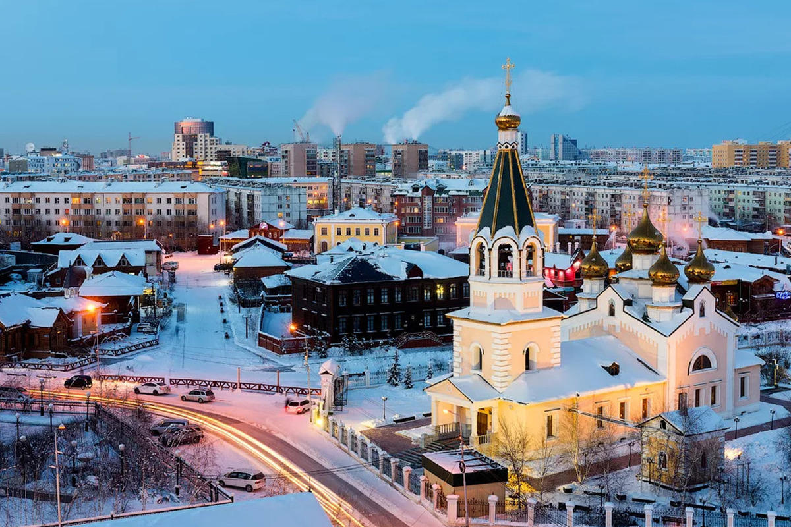

Содержание
Личная страничка Виктории Голубчиковой
Родилась 6 ноября 2003 года в Перми. В 2020 году закончила школу №14.
В том же году поступила в "Академическую школу Информационных Технологий"
Хобби
- Смотреть сериалы и фильмы
- Рисовать
- Программировние
- Вязание
3 любимых сериала
- Элита
- Под куполом
- Бумажный дом
Самое далекое место, где я побывала.
Якутск - город в Российской Федерации, столица Республики Саха (Якутия). Образует городской округ город Якутск.

Третий город Дальневосточного федерального округа по численностинаселения(после Владивостока и Хабаровска). Самый крупный город, расположенныйвзоневечной мерзлоты.